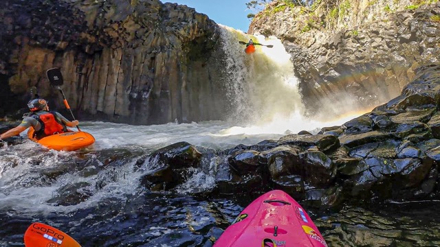

History
Canoe Do It began as a small dream shared between two friends—one raised among the rivers and valleys of Hawaiʻi, the other a former rafting guide from Japan’s Nagano region. Both believed that white‑water adventure could be more than a thrill ride; it could be a cultural bridge, a way to honor the land, and a path for people to discover their own courage. In 2014, after years of guiding tours separately, they combined their skills, philosophies, and humor to launch Canoe Do It. Their early days were humble: a single raft, a borrowed truck, and a handful of guests who were mostly friends of friends. But word spread quickly about their unique blend of aloha spirit, Japanese precision, and playful encouragement.

By 2017, Canoe Do It had grown into a full‑fledged adventure company known for its safety standards, cultural storytelling, and team‑building style paddling. The company expanded its routes, added bilingual guides, and developed eco‑initiatives to protect the rivers they depended on. Today, Canoe Do It is recognized as a symbol of harmony on the water—where visitors from around the world come to paddle together, laugh together, and prove to themselves that yes… they canoe do it.